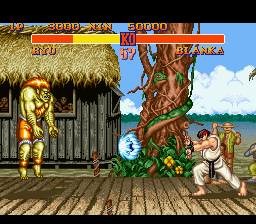

Colecția / Lupte
Street Fighter II
Un meci scurt, dar plin de decizii: cât de aproape stai, când ataci și ce așteaptă adversarul.
Descoperă consola
Povestea și ediția prezentată
Fiecare personaj are propriul stil, propriile atacuri și o distanță la care se simte confortabil. Dincolo de combinațiile spectaculoase, meciurile sunt despre anticipare și momentul potrivit.
Originalul arcade a apărut în 1991. Versiunea SNES din 1992, ilustrată aici, a adus competiția în sufragerie și poate fi jucată de doi oameni pe aceeași consolă.
Cum se joacă
- Fiecare personaj are un plan diferit. Ryu folosește instrumente variate, iar alți luptători se bazează mai mult pe apropiere, mobilitate sau distanță.
- Momentul contează. Un atac ratat îți poate lăsa personajul expus. Observă ce se întâmplă după o mișcare, nu doar în timpul ei.
- Versiunile nu sunt identice. World Warrior, Champion Edition și Turbo au diferențe de personaje și reguli. Captura este din primul port SNES, nu din Turbo.
Un detaliu care contează
În primul port SNES sunt selectabili cei opt luptători principali; cei patru șefi nu sunt personaje selectabile ca în edițiile ulterioare. Maparea butoanelor se poate verifica în meniul de opțiuni.
Comenzile de bază
Comenzile de mai jos se referă la ediția originală prezentată. O relansare poate folosi alte butoane sau poate permite remaparea.
| Comandă | Ce face | Sfat |
|---|---|---|
| Crucea direcțională | Mișcare, săritură și ghemuire | Păstrează distanța la care personajul tău este eficient. |
| Înapoi față de adversar | Blocare în situațiile potrivite | Blocarea joasă și cea în picioare opresc atacuri diferite. |
| Trei intensități de pumn | Atacuri cu viteze și distanțe diferite | Un atac puternic poate fi mai lent. |
| Trei intensități de picior | Al doilea set de atacuri | Învață întâi raza atacurilor obișnuite. |
Prima ta sesiune
- Alege un personaj și exersează deplasarea și blocarea.
- Învață un atac scurt și unul cu rază mai mare.
- Joacă un meci în doi și urmărește distanța, înainte să încerci combinații lungi.
De ce merită descoperit
Street Fighter II a făcut din duel o conversație între doi jucători. Stilurile diferite și controlul cu șase tipuri de atac au influențat puternic jocurile de luptă care au urmat.
Surse și context
Sursele proiectului și ale capturilor · Cronologia consolelor